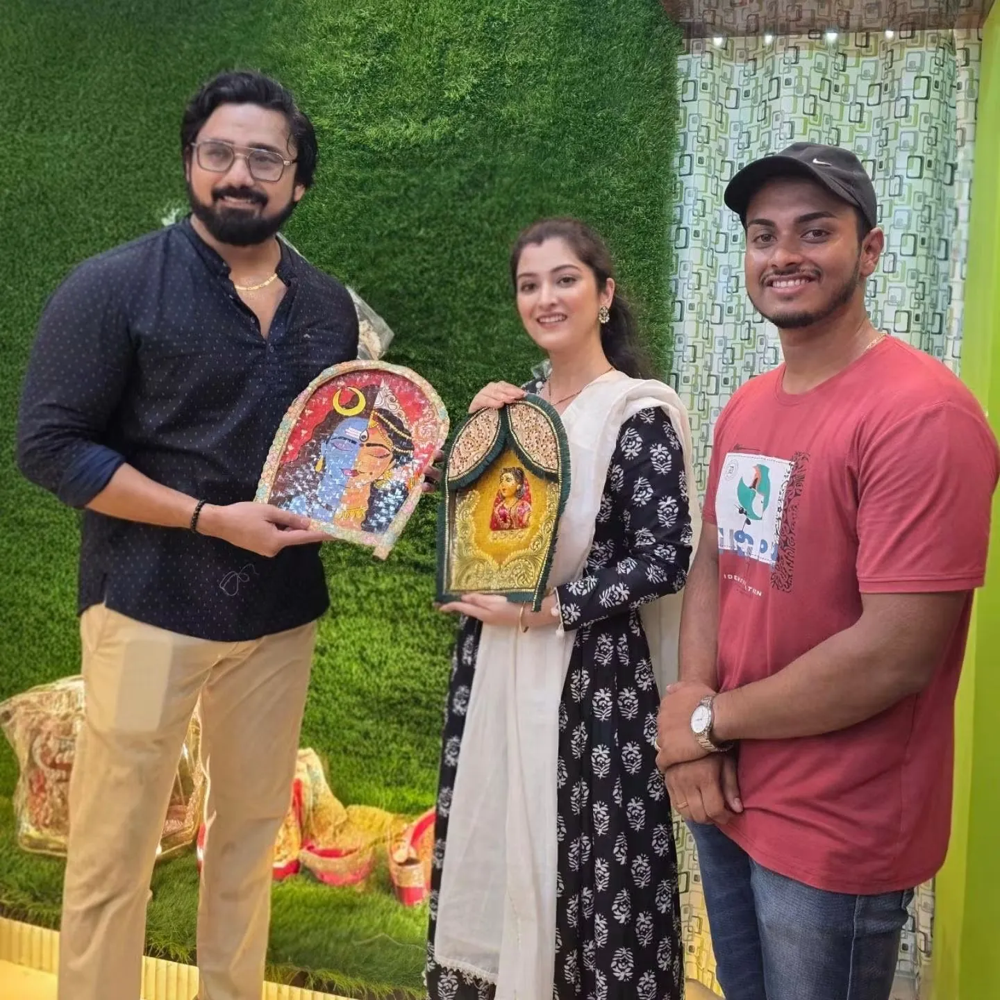
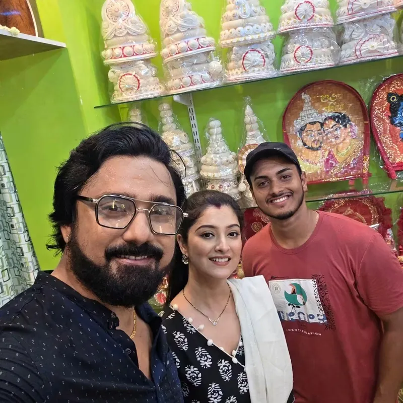
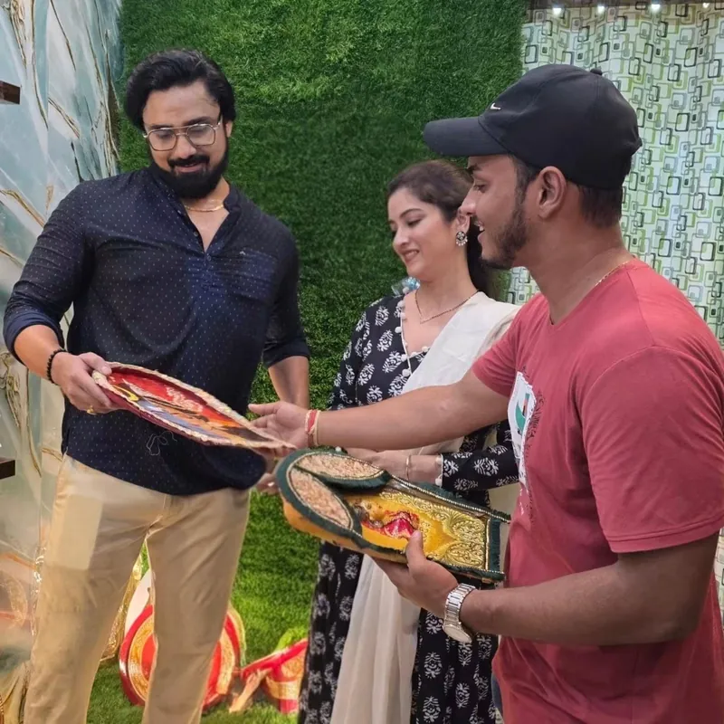

Choosing painted panels at the Parineeta studio
Celebrities from Bengal have visited our Katwa studio to choose hand-painted pieces. We are proud to paint for them, and for every family who walks through our door.